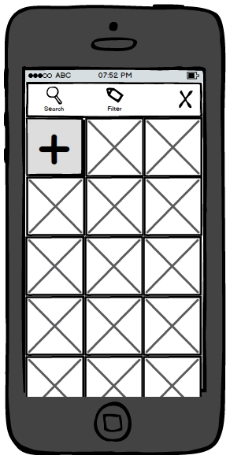

Add New Post
Add Media
Tool Bar
Modal Content

Media Grid with Uploading Image
Scenario: Add New Image
The user has chosen an image and it is uploading to the site. This should be represented by a new thumbnail in the grid with some sort of progress indicator that then becomes a thumbnail.
- Previous: Upload Image
- Alternate Previous: From Camera
- Alternate Next: Full Width View
- Next: Inserted Image